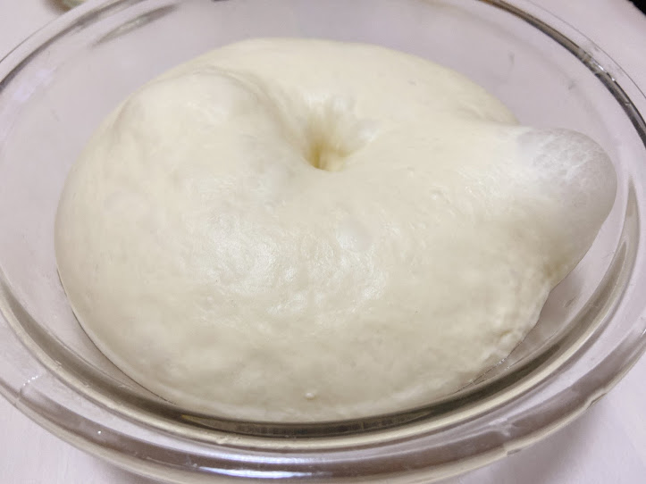
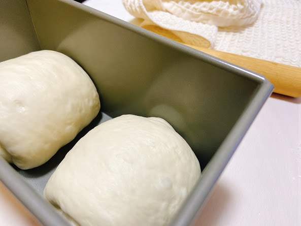
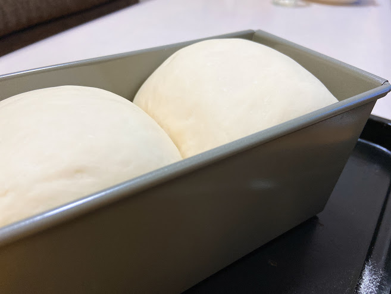
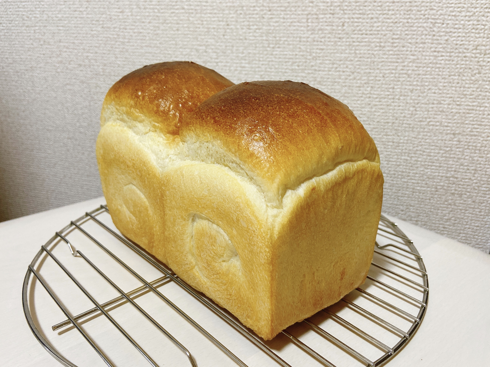
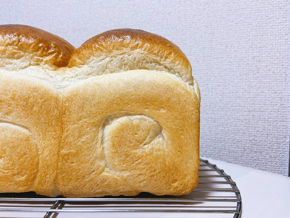
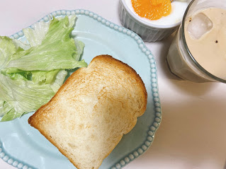
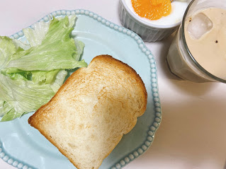

山型食パン
耳はかりっと、中はもちふわの山形食パン。
厚めにスライスして もちふわ食感を楽しむのが◎
欲を言えば 焼きたてほかほかの食パンにそのままかじりつきたい。。。
厚めにスライスして もちふわ食感を楽しむのが◎
欲を言えば 焼きたてほかほかの食パンにそのままかじりつきたい。。。
▽フォトギャラリー△

〜 一次発酵 〜

〜 成形 〜

〜 二次発酵 〜

〜 焼きたて 〜

〜 焼きたて 〜
▽材料△
| 材料 | 分量(g) |
|---|---|
| 強力粉 | 250 |
| 砂糖 | 12.5 |
| 塩 | 4.7 |
| 牛乳 | 50 |
| バター | 15 |
| ドライイースト | 2.5 |
| 水 | 145 |
▽アレンジ△

〜 トースト 〜
トーストして外はかりっと中はもちふわ。
温かいうちにバターを塗って。
朝ご飯といえばやっぱりトーストですね

〜 トースト 〜
トーストして外はかりっと中はもちふわ。
温かいうちにバターを塗って。
朝ご飯といえばやっぱりトーストですね
温かいうちにバターを塗って。
朝ご飯といえばやっぱりトーストですね